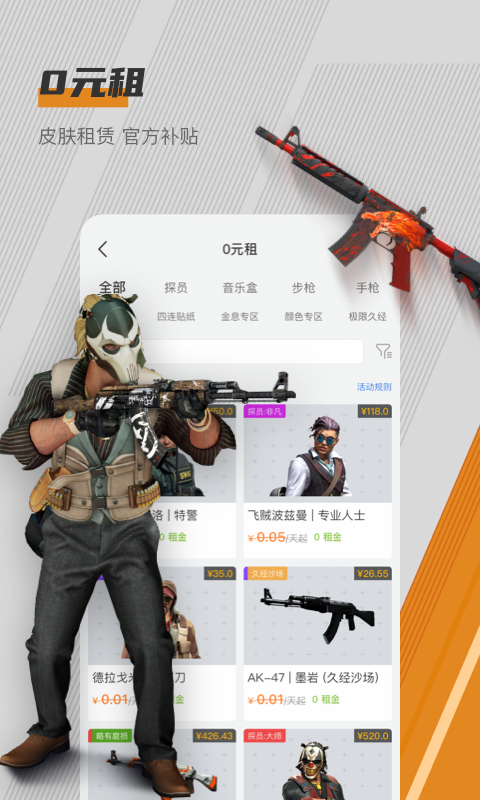
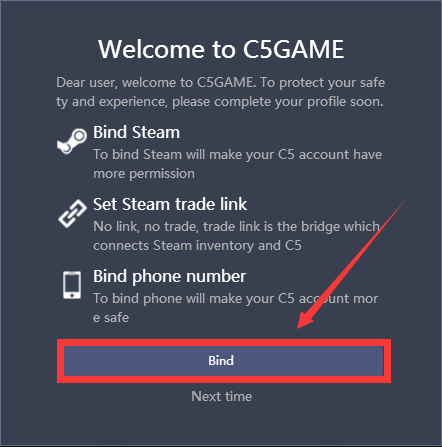

用了三年 C5GAME，今天才发现这四个功能藏得真深
从海外版切换到多账号库存管理，再到自动发货守护的网页端替代——把 C5GAME 翻个底朝天的人整理出来的冷门技巧，每个都能用上。
你以为c5game官网就是个买 CS2、DOTA2 饰品的地方？打开 App 上架、选饰品、付款走人，流程熟得闭着眼都能走完。可我翻了快三年才发现，它藏着好几个官方都不怎么宣传的功能——不是摆设，是真有人在用而且省了不少事。
隐藏功能一：海外版不只是换语言，是给跨区域玩家留的后门
第一个让我惊到的是海外版。C5GAME 国内版用户默认被引导到中文界面，谁会去点那个英文入口？但它跟国内版共用底层交易能力、机器人系统和库存数据，区别只在界面语言、支付方式和 Steam 区域支持。
我有次帮一个东南亚的朋友买饰品，他用的是新加坡区域的 Steam 账号——国内版下单时系统总是报"区域限制无法接受报价"，切到海外版才顺利成交。更有意思的是，国内卖家可以通过海外版把饰品卖给海外买家，有时海外市场的定价反而更高。
海外版的入口藏在官网右上角的语言切换里，手机 App 里要进设置才找得到。不是每个人都需要它——如果你只有国区 Steam，日常买卖就在国内版搞定就行。但手里有非大陆区域 Steam 账号、或者想试试做跨境生意的卖家，这个门真的值得推一推。

隐藏功能二：一个 C5 账号绑五个 Steam，库存再也不用四处跳
早期我以为 C5GAME 是"一个 Steam 只能绑一个 C5 账户"的死规则，直到有次在论坛看到有人贴库存截图——合并显示的，左边一堆来自主号、右边一堆来自小号。
原来 C5GAME 支持一个账户绑定最多五个 Steam 账号。路径藏得深：个人中心 → 设置 → Steam 账号管理 → 添加新 Steam 账号。流程就是跳到 Steam 登录页用另一个账号授权，不复杂，但得知道这个入口存在。
绑完之后在"我的库存"页面可以切换查看"全部账号"合并视图，或者点具体标签只看某个账号的库存。上架时系统自动识别饰品属于哪个 Steam 账号，发货也从对应账号发出——不会串。但要注意，Steam 账号之间的库存还是独立的，绑在一起只是方便管理，不能直接转饰品。
隐藏功能三：不想挂 PC 客户端？网页端也能自动发货
自动发货是 C5GAME 卖家最省心的功能，c5game文档写的前提是"保持 PC 客户端运行"。可我不想让电脑天天开着，试过几次手动发货又老超时——12 小时倒计时看起来宽松，实际一忙起来就忘。
后来才发现网页端有个"自动发货守护"的入口。原理跟 PC 客户端类似，就是通过浏览器保持会话在线，让平台机器人能访问你的 Steam 库存。我用一个旧浏览器标签页挂着，偶尔被系统清理了重新打开就行，比挂整个 PC 客户端省电多了。
不过网页端的守护稳定性不如 PC 客户端——浏览器标签页被关闭、Cookie 过期、网络中断都会断。适合偶尔卖卖、不追求极致稳定的轻量卖家；每天出几十单的专业卖家还是乖乖挂客户端，c5game下载拿一份长期挂着就是。

隐藏功能四：下单前能查卖家/买家的欺诈风险
C5GAME 对外宣传的"八重安全防护"里有一层叫"Steam 信用大数据"，但官方从没说过用户自己能不能看。我在订单详情页翻的时候无意中发现，每个交易对方的 Steam 名称旁边有个小图标——点开能看到他的交易历史、举报记录、封禁状态摘要。
这层数据来自 C5GAME 的跨平台欺诈账号识别系统，跟其他平台共享黑名单。不是精确的信用分，更像一个快速的风险提示：有没有多次退款记录、有没有被标记过欺诈、VAC 封禁历史。我现在下单前习惯先点一下，省过好几次跟差评卖家扯皮的事。
有个坑得提醒你
多账号绑定看起来方便，但安全复杂度会成倍增加。我见过有人所有 Steam 账号用同一个密码（还跟 C5GAME 密码一样），一个被盗等于全线崩盘。每个绑定的 Steam 账号都必须开手机验证器，而且密码互不相同——这条别省。
另外海外版的 Steam 区域限制比国内版更松，但不是没有。某些礼物链接只能在特定区域激活，跨区域交易失败时先排查是不是区域问题，别一上来就投诉客服。
C5GAME 这类平台的隐藏功能藏得真深——不是不想让你用，是它默认你只走"买卖饰品"这一条标准路径。把它用透一点，上面这四个功能至少能让你的交易体验少一半烦心事。本文里提到的全部资料也同步维护着，GitHub、Gitee、GitCode 三个仓库都能拿到，按你方便的方式挑一个就行。